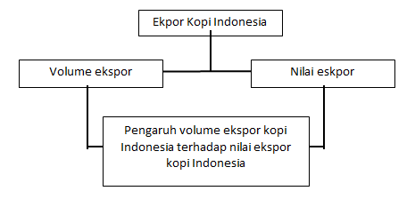
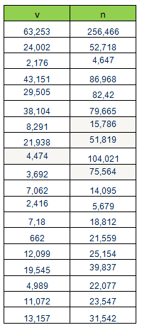
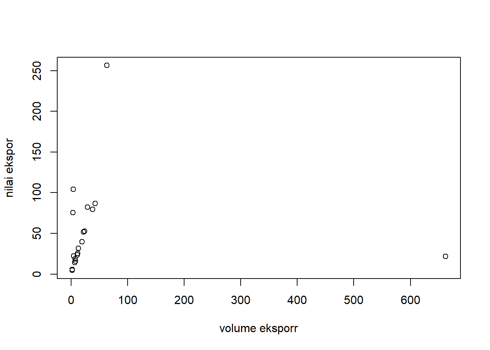
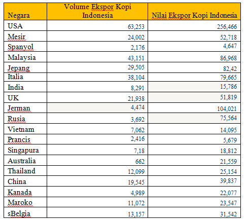

library(tidyverse)
library(readxl)Analisis Pengaruh Volume Ekspor Kopi Terhadap Nilai Ekspor Kopi Indonesia Tahun 2017
Metode Penelitian Politeknik APP Jakarta

1 Pendahuluan
1.1 Latar belakang
Indonesia dikenal sebagai salah satu negara agraris terbesar di kawasan Asia Tenggara. Dengan keaadaan alamterbagi menjadi beberapa subsektor tanaman perkebunan. Sektor perkebunan diniliai mempunyai peranan penting yang sangat subur dan luas, masyarakat Indonesia mayoritas bermata pencaharian di sektor pertanian. Secara umum, pertanian di Indonesia terbagi menjadi beberapa subsektor, salah satu subsektor yang memiliki potensi baik yaitu subsektor tanaman perkebunan. Sektor perkebunan dinilai mempunyai peranan besar dan memberikan kontribusi dalam penyediaan lapangan kerja, ekspor, dan sumber pertumbuhan. Salah satu komoditas primer dari sektor perkebunan yang menjadi andalan di Indonesia adalah kopi. Kopi memiliki peranan penting dalam struktur perekonomian Indonesia khususnya dalam hal ekspor. Indonesia menjadi salah satu dari eksportir terbesar dunia, dengan tujuan ekspor ke berbagai negara. Area perkebunan kopi Indonesia tersebar ada dibeberapa pulau seperti Sumatera, Jawa, Bali, Flores dan Papua.
1.2 Ruang lingkup
Pada penelitian ini ruang lingkup masalah yang diambil berupa pengaruh volume ekspor kopi Indonesia terhadap nilai ekspor kopi Indonesia pada tahun 2017. Ruang lingkup yang digunakan terbatas agar pembahasan tidak terlalu melebar.
1.3 Rumusan masalah
- Bagaimana volume ekspor kopi dan nilai ekspor kopi Indonesia pada tahun 2017?
- Apakah volume ekspor kopi berpengaruh terhadap nilai ekspor kopi Indonesia pada tahun 2017?
- Bagaimana pengaruh volume ekspor kopi terhadap nilai ekspor kopi Indonesia pada tahun 2017?
1.4 Tujuan dan manfaat penelitian
- Menganalisis volume ekspor kopi dan nilai ekspor kopi Indonesia pada tahun 2017
- Mengetahuiadanya pengaruh volume ekspor kopi terhadap nilai ekspor kopi Indonesia pada tahun2017
- Menganalisis pengaruh volume eskpor kopi terhadap nilai ekspor kopi Indonesia pada tahun 2017
1.5 Package
Dalam penelitian packages yang digunakan antara lain sebagai berikut:
2 Studi pustaka
2.1 Teori
Menurut Purnamawati dan Fatmawati (2013:12) ekspor adalah kegiatan menjual barang/jasa dari daerah pabean sesuai peraturan dan perundang-undangan yang berlaku. Daerah pabean adalah seluruh wilayah nasional dari suatu negara, dimana dipungut bea masuk dan bea keluar untuk semua barang yang melewati batas-batas (borederline) wilayah itu, kecuali bagian tertentu di wilayah itu yang secara tegas (berdasarkan undang-undang) dinyatakan sebagai wilayah diluar wilayah pabean.
Kopi merupakan salah satu hasil komoditi perkebunan yang memiliki nilai ekonomis yang cukup tinggi di antara tanaman perkebunan lainnya dan berperan penting sebagai sumber devisa negara. Kopi tidak hanya berperan penting sebagai sumber devisa melainkan juga merupakan sumber penghasilan bagi tidak kurang dari satu setengah juta jiwa petani kopi di Indonesia(Maulani & Wahyuningsih, 2021) .
2.2 Kerangka Penelitian

3 Metode penelitian
3.1 Data
Penelitian ini menggunakan data sekunder untuk menjawab tujuan penelitian yang sudah dirumuskan. Data yang digunakan menunjukkan volume ekspor kopi Indonesia dan nilai ekspor kopi Indonesia. Tahun data yang digunakan yaitu tahun 2017. Sumber data yang digunakan dalam penelitian ini adalah International Trade Centre (ITC).

setwd('C:/METOPEL/TUGAS') # AWAS SETWD-NYA PERBAIKI DULU
library('readxl')
library('tidyverse')
dat<-read_excel('uas.xlsx')
reg1<-lm(v~n,data=dat)
summary(reg1)
Call:
lm(formula = v ~ n, data = dat)
Residuals:
Min 1Q Median 3Q Max
-54.97 -47.93 -41.10 -23.06 606.83
Coefficients:
Estimate Std. Error t value Pr(>|t|)
(Intercept) 57.6822 48.3156 1.194 0.249
n -0.1164 0.6236 -0.187 0.854
Residual standard error: 152.9 on 17 degrees of freedom
Multiple R-squared: 0.002046, Adjusted R-squared: -0.05666
F-statistic: 0.03485 on 1 and 17 DF, p-value: 0.8541plot(dat$v,dat$n,xlab = "volume eksporr",ylab="nilai ekspor")
3.2 Metode analisis
Metode yang dipilih adalah regresi univariat atau Ordinary Least Square (OLS) dengan 1 variabel independen. Penelitian ini merbaksud mencari hubungan antara nilai ekspor kopi dan volume ekspor kopi. Spesifikasi yang dilakukan adalah:
\[ y_{t}=\beta_0 + \beta_1 x_t+\mu_t \] di mana \(y_t\) adalah nilai ekspor kopi dan \(x_t\) adalah volume ekspor kopi.
4 Pembahasan
4.1 Pembahasan masalah
Nilai ekspor menjadi salah satu penambah pendapatan negara yang cukup besar, sehingga nilai ekspor cukup diperhatikan oleh pemerintah. komoditas kopi menjadi salah satu penyumbang terbesar pendapatan negara. Nilai ekspor dapat dipengaruhi oleh volume ekspor, sebab jika volume ekspor suatu negara meningkat maka nilai ekspornya pun akan ikut meningkat dan hal tersebut sangat menguntungkan bagi suatu negara.
Oleh karena itu, penelitian ini bertujuan untuk melihat seberapa besar pengaruh volume ekspor terhadap nilai ekspor di Indonesia khususnya pada komoditas kopi. berikut adalah hasil volume eskpor kopi dan nilai ekspor kopi Indonesia ke beberapa negara tujuan ekspornya pada tahun 2017.

4.2 Analisis masalah
Hasil regresinya adalah sebagai berikut.
reg1<-lm(v~n,data=dat)
summary(reg1)
Call:
lm(formula = v ~ n, data = dat)
Residuals:
Min 1Q Median 3Q Max
-54.97 -47.93 -41.10 -23.06 606.83
Coefficients:
Estimate Std. Error t value Pr(>|t|)
(Intercept) 57.6822 48.3156 1.194 0.249
n -0.1164 0.6236 -0.187 0.854
Residual standard error: 152.9 on 17 degrees of freedom
Multiple R-squared: 0.002046, Adjusted R-squared: -0.05666
F-statistic: 0.03485 on 1 and 17 DF, p-value: 0.85415 Kesimpulan
Berdasarkan hasil regresi di atas, dapat disimpulkan bahwa setiap 1% kenaikan volume eskpor kopi Indonesia sejalan dengan penurunan 0,11% nilai ekspor kopi Indonesia. Sehingga volume ekspor kopi Indonesia pada tahun 2017 tidak berpengaruh terhadap nilai ekspor kopi Indonesia ke berbagai negara tujuan.
6 Saran
Dalam meningkatkan meningkatkan nilai ekspornya, maka pemerintah harus lebih memberikan perhatiannya terhadap peningkatan volume ekspor komoditi kopi dengan upaya membantu peningkatan produktivitas kopi Indonesia yang lebih baik dan berkualitas, memberikan dukungan berupa kebijakan yang mendukung peningkatan produktivitas, mutu, dan kualitas kopi, serta membatu pengembangan teknologi dalam memproduksi kopi sehingga hasil yang didapatkan lebih banyak.
7 Referensi
International Trade Centre (ITC). (2021). Volume Ekspor Kopi Indonesia.
Jamil, A. S. (2019). Daya Saing Perdagangan Kopi Indonesia di Pasar Global. Agriekonomika, 8(1), 26. https://doi.org/10.21107/agriekonomika.v8i1.4924
Marhaenanto, B., Soedibyo, D. W., & Farid, M. (2015). Penentuan lama Sangrai Kopi Berdasarkan Variasi Derajat Sangrai Menggunakan Model Warna Rgb Pada Pengolahan Citra Digital (Digital Image Processing). Jurnal Agroteknologi, 09(02), 102 111. https://jurnal.unej.ac.id/index.php/JAGT/article/view/3536
Maulani, R. D., & Wahyuningsih, D. (2021). Analisis Ekspor Kopi Indonesia pada Pasar Internasional. Pamator Journal, 14(1), 27–33. https://doi.org/10.21107/pamator.v14i1.8692
Savira, R. N., Anindita, R., & Nugroho, C. P. (2022). Analisis Perdagangan Ekspor Kopi Indonesia di Pasar Internasional. Jurnal Ekonomi Pertanian Dan Agribisnis, 6(3), 963. https://doi.org/10.21776/ub.jepa.2022.006.03.17